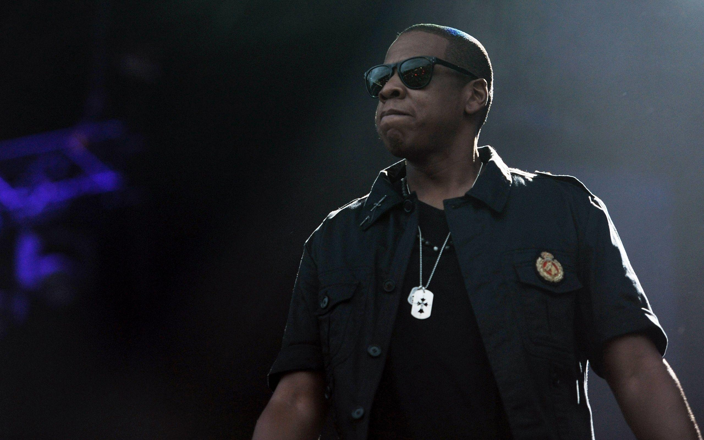
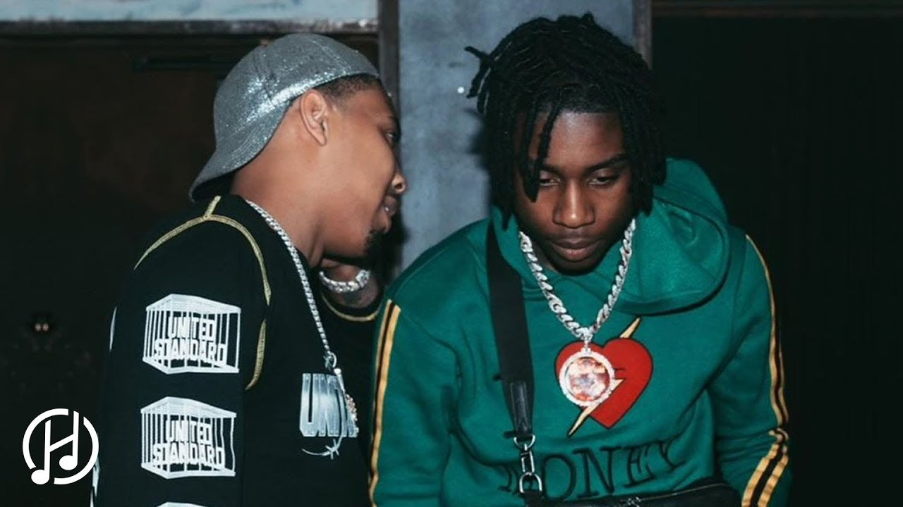
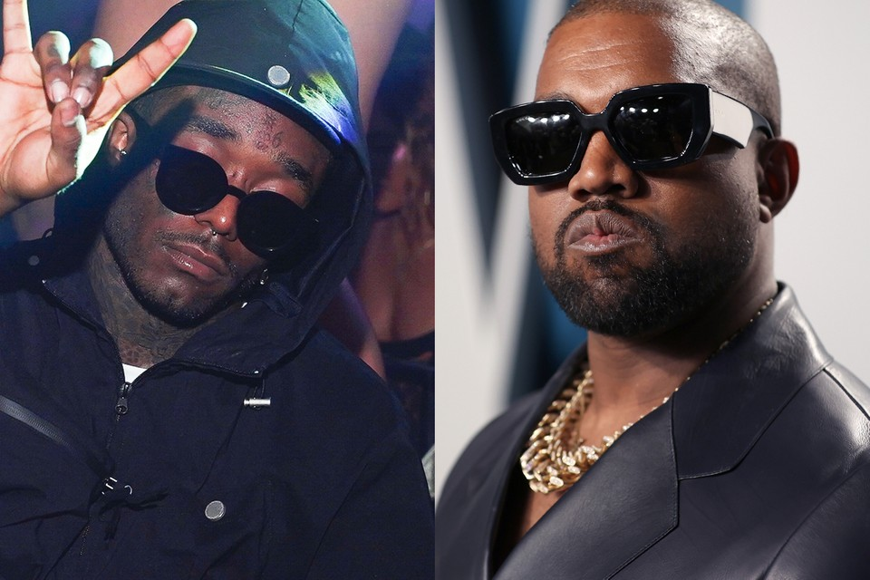
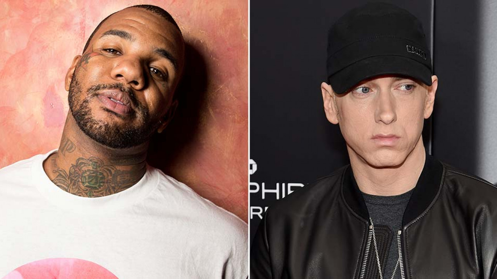
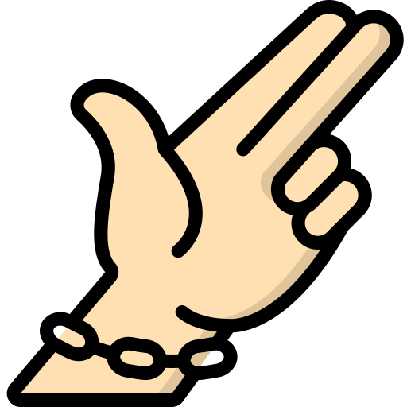
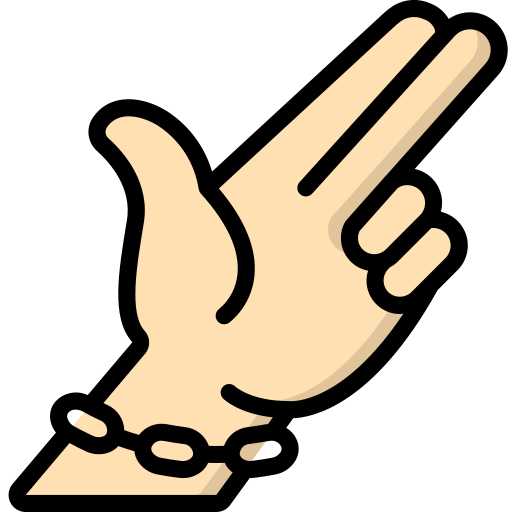

Everything you missed this week
JAY-Z: FORMER SHAWN CARTER FOUNDATION RECIPIENT ENJOYS 'FULL CIRCLE MOMENT' WITH RAPPER
Jay-Z's Shawn Carter Foundation has changed the lives of many kids unable to afford a college education and one previous recipient was able to meet the man behind his success in a recent full circle moment. Michael J. Payton posted a picture of himself alongside Hov on his Twitter and shouted out the Roc-A-Fella mogul and the SCF for helping him get through school, noting in turn it afforded him the opportunity to work directly with Jay.
G HERBO & POLO G FACING $300K LAWSUIT FOR FLORIDA FESTIVAL CANCELATION
According to TMZ, NoNaNi Entertainment head Charles Potter has accused the two rappers of double booking shows in Tampa and Atlanta in November 2021 and choosing to cancel the Florida date. Potter claims he has contracts showing Polo G collected roughly $143,000 in deposits, while G Herbo pocketed around $43,000. Additionally, Potter says NoNaNi paid another $200,000 to handle venue costs, a soundstage, lighting, advertising, promotion and several hosts, including Million Dollaz Worth Of Game’s Gillie Da Kid and Wallo.
DRAKE GETS FACE TATTOO DEDICATED TO HIS MOTHER

Drake is no stranger to tattoos, but he’s just gotten his most visible ink yet in the form of a face tattoo dedicated to his mother, Sandra Gale. Los Angeles-based tattoo artist NAL shared a video of Drizzy getting his mom’s initials, “SG,” tatted under his left eye on his Instagram page on Thursday (August 11), writing in the caption, “The boi @champagnepapi.”
KANYE WEST AND LIL UZI VERT WEARING MATCHING YEAZY SUNGLASSES AFTER GETTING MATCHING TATTOOS
It's always inspiring to see a budding friendship. Kanye West and Lil Uzi Vert have been palling around town as of late, most recently getting matching tattoos with Steve Lacy that read, "We here forever technically." Kanye's fifth divorce lawyer just abandoned him, so perhaps Uzi is trying to cheer him up. In a recent post to Instagram, Lil Uzi Vert showed off pictures of them and Kanye wearing matching minimalist Yeezy sunglasses and other products from the upcoming YZY GAP YR 3022 SHDZ. The shades are pretty futuristic, sitting close to their face with the bands wrapping around their heads.
THE GAME COMES FOR EMINEM'S JUGULAR ON ‘THE BLACK SLIM SHADY' DISS TRACK
The Game has released a scathing Eminem diss track called “The Black Slim Shady” — listen to it below. Taken from the Compton rapper’s new album, Drillmatic: Heart Vs. The Mind, which arrives Friday (August 12), the over 10-minute tongue lashing begins with a skit centered around an Uber driver who’s been tasked with driving Game to a mysterious location in Detroit, although it’s “somewhere near 8 Mile.” Game later discovers the driver is the brother of Stan, the fictional die-hard Eminem fan who dies at the end of the Detroit rapper’s 2000 hit “Stan.”
MADONNA SAYS SHE “WORSHIPS” KENDRICK LAMAR AS AN ARTIST AND WANTS TO COLLABORATE

Madonna was on hand promoting her Finally Enough Love: 50 Number One album that has Justin Timberlake, Nicki Minaj, and more. Still, Madonna has Kendrick on her radar. “I mean there’s one artist that I worship more than anything in life and I would love to collaborate with him and that’s Kendrick Lamar,” Madonna said. “His new record is, like, history-making… mind-bogglingly brilliant.”
MEEK MILL AND WME UNITE FOR NEW STRATEGIC PARTNERSHIP

The partnership is a part of Meek’s latest project, Culture Currency, which aims to grow his company while also identifying and assisting his network of artists, athletes, and entertainers so they can make the most of their cultural influence and expand their opportunities in the entertainment, brand, and business sectors. WME will represent Meek in all capacities while collaborating to find potential talent to partner with or represent who, in turn, may have access to the agency’s resources and expansive worldwide network, which includes the film, television, music, books, internet, endorsements, and more industries
 
